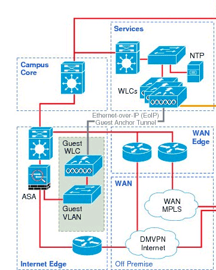

Course Overview Applied Computer Sciences
Hardware and Desktop Operating Systems
Hardware:
- Numeral sysems (binary, hexacedimal, …)
- Types of computers (desktop, laptop, sbc, µC)
- Technical features of computer parts
- Electronic components and logic functions in circuits
- datasheets and schematics
Desktop Operating systems:
- Practical introduction in operating systems and virtualization
- System management in Windows 10 (user management, file management, disk management, …) via GUI and CLI (PowerShell and CMD)
- System management in Linux (user management, file management, disk management, …) via CLI (bash-shell)

Databases
There will be an introduction to the following concepts: database, database system, relational database system, SQL. We will also handle SQL CRUD operations (read, insert, update and delete data)
Conceptual topics will touch on how to create a relational data model using normalisation and implement this in SQL
Problem Solving
The following mathematical topics will be covered in this course:
- Review of algebra and precalculus
- Propositional logic and logical circuits
- Logarithms, functions and graphs
- Introduction to cryptography (modular arithmetic)
- Affine cipher, hash functions and RSA
- Techniques from linear algebra
- Introduction to codes and linear codes
Programming Fundamentals
- Control structures: sequencing, selection and iteration
- Variables and data types
- Algorithms and data structures: 1 and 2 dimensional lists
- Functions: arguments, parameters and return values, complexity
- Software Design: decomposition, divide and conquer
- Algorithms and data structures: binary and linear search in a list
- Testing: make use of unit testing
- Basic version control
Web Development
PART 1: HTML & CSS
Developing websites with semantic and valid HTML5!
A plethora of tags, such as the semantic containers, lists, navigation elements, forms, tables and many others are taught in order to translate text to a logical HTML structure.

Modern CSS techniques that will effortlessly translate into responsible design, most notably by deep knowledge of box model. All CSS properties required to design and develop a contemporary web application.
Leveraging CSS selectors for efficient coding. Flex!
PART 2: JavaScript
Scripting for web applications following the latest ECMA script standards
Application of:
- variables and scope
- if, switch, while, for
- Functions And Arrays
- Objects and JSON
- Higher order functions
- Handling user input
- Local / session storage
- in practice, simulated in real world cases.
Code is developed with cross browser equivalent behaviour in mind. Code quality is a large part of the course. Several best practices as well as "Don't"s will be handled by means of examples.
E-business
- Definition Process thinking & company structures
- Introduction to business software: ERP, CRM, WMS, ...
- Most important business processes in a business are discussed: Finance, Purchase, CRM & Sales, Production, HR, Project management, BusineDOM selection
- Event handling ( binding, this )ss Intelligence, ...
- Cases for each process are executed in Odoo (open source ERP)
Back to main page